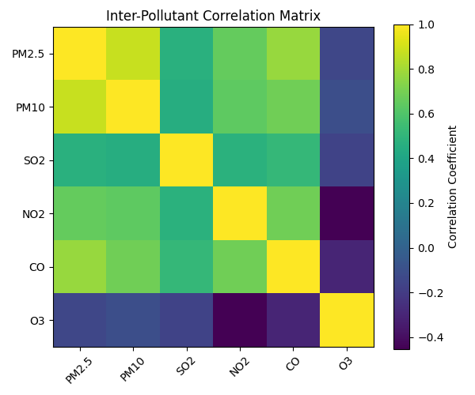

View full outputBeijing air quality
Pollutant relationships across Beijing monitoring stations. Explore the committed correlation matrix and the Python that produced it.
Explore Python snippet
Analysis.py
corr = df[cols].corr()
plt.figure(figsize=(6,5))
plt.imshow(corr)
plt.colorbar(label="Correlation Coefficient")
plt.xticks(range(len(cols)), cols, rotation=45)
plt.yticks(range(len(cols)), cols)
plt.title("Inter-Pollutant Correlation Matrix")
plt.tight_layout()
plt.savefig("images/correlation.png")Excerpt from the project; requires its surrounding code and dependencies.